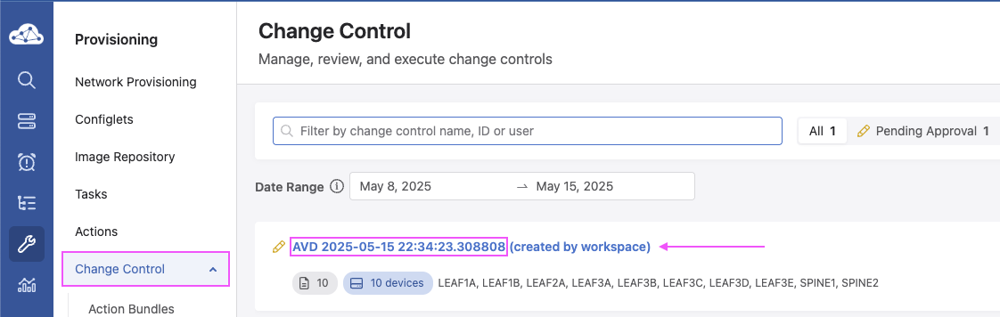
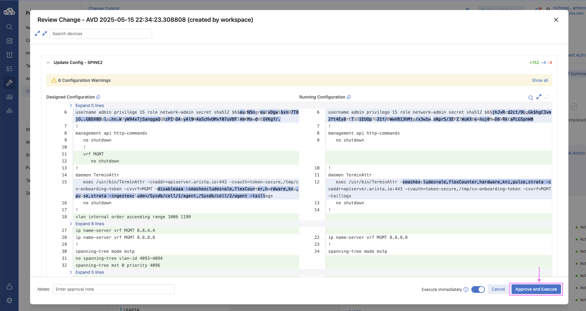

Automation Workflow¶
AVD Workflow Overview¶
This document outlines the workflow for using Arista Ansible Validated Designs (AVD) to automate and deploy network configurations to EOS devices via CloudVision as-a-Service (CVaaS).
sequenceDiagram
autonumber
actor User
participant AVD
participant GH as GitHub
participant CVaaS
participant Device
par Configuration Prep
User->>AVD: Modify YAML-based variable definitions
AVD->>AVD: Run build Ansible playbook
Note over User,AVD: AVD data models are rendered locally in offline mode
AVD->>GH: Commit configuration to source control
Note over AVD,GH: Configuration verified and ready for deployment
end
par Automation Workflow
GH-->>+GH: Git Actions triggered upon PR Approval
Note over GH: Git Actions executes deploy-studio.yml
GH->>-CVaaS: Trigger deploy Ansible playbook
CVaaS->>+CVaaS: Workspace validate of configuration
CVaaS->>-CVaaS: Create Change Control ticket
Note over CVaaS: Change Control is ready for approval
CVaaS->>+Device: Push configuration to device
Device-->>-CVaaS: Confirm configuration deployment
CVaaS-->>AVD: Report deployment status
endInventory Structure¶
The following is the recommended Ansible file structure for an Arista Validated Design (AVD) campus deployment. This layout ensures that device-specific variables, group variables, and playbooks are organized for both clarity and scalability.
project_root/
├── inventory.yml # Primary inventory file listing all devices and groups in the lab/fabric.
├── group_vars/ # Directory containing variables applied to device groups.
│ ├── all.yml # Global variables applied to all devices, e.g., NTP, logging, common VLANs.
│ ├── <group>.yml # Group-specific variables for a subset of devices (e.g., LEAF, SPINE).
├── host_vars/ # Directory containing device-specific configuration variables.
│ └── <device-hostname>.yml # Host-level variables overriding group/global defaults (e.g., loopback IP, mgmt interface).
├── build.yml # Playbook to render structured configurations from templates using inventory data.
├── deploy.yml # Playbook to push the rendered configurations to devices via CVaaS or directly via EOS API.
└── ansible.cfg # Ansible configuration file. Specifies inventory location, connection settings, and AVD-specific options.
Build Playbook¶
The build.yml playbook is responsible for generating both structured AVD configurations and device-specific CLI-ready configurations. It leverages two core AVD roles: eos_designs and eos_cli_config_gen.
- name: Build Configs
hosts: CAMPUS
gather_facts: false
tasks:
- name: Generate AVD Structured Configurations and Fabric Documentation
ansible.builtin.import_role:
name: arista.avd.eos_designs
vars:
fabric_dir_name: 'fabric'
fabric_dir: '{{ playbook_dir }}/docs/documentation/{{ fabric_dir_name }}'
- name: Generate Device Configurations and Documentation
ansible.builtin.import_role:
name: arista.avd.eos_cli_config_gen
vars:
devices_dir_name: 'devices'
devices_dir: '{{ playbook_dir }}/docs/documentation/{{ devices_dir_name }}'
arista.avd.eos_designs¶

Purpose:
Generates structured configuration data models from your inventory (inventory.yml, group_vars, host_vars) and produces fabric-wide documentation.
Outputs:
-
Markdown Documentation
- Markdown documentation rended under GIT pages directory
/docs/documentation/fabric/
vars: fabric_dir_name: 'fabric' fabric_dir: '{{ playbook_dir }}/docs/documentation/{{ fabric_dir_name }}' - Markdown documentation rended under GIT pages directory
-
Structured Configuration Data
- YAML device data under
structured_configs/
- YAML device data under
Includes:
- Interface assignments
- BGP/EVPN design and settings
- VLAN and SVI definitions
- Underlay and overlay routing logic
arista.avd.eos_cli_config_gen¶

Purpose:
Transforms the structured configuration output from eos_designs into CLI-ready EOS configurations using Jinja2 templates.
Outputs:
- Flat text configuration files per device in intended/configs/
- Structured configs for CVP Studio in intended/structured_configs/
- Device documentation rended under GIT pages directory
/docs/documentation/fabric/
vars:
devices_dir_name: 'devices'
devices_dir: '{{ playbook_dir }}/docs/documentation/{{ devices_dir_name }}'
Includes:
- Complete running-config per device
- Platform-specific syntax (MLAG, port-channel, BGP, etc.)
- Configurations ready for EOS or CVaaS deployment
How the Roles Work Together¶
eos_designs:Defines what the network should do — processes inventory, computes interface IPs, routing, VLANs, and fabric topology, and exports structured YAML data.eos_cli_config_gen:Defines how to implement it — reads structured YAML data, renders CLI syntax using Jinja2 templates, and produces device-ready configuration files.
Key Concept¶
| Role | Function |
|---|---|
eos_designs |
"What should this network do?" (design intent) |
eos_cli_config_gen |
"What CLI is needed to implement it?" (device implementation) |
Example Output build.yml¶
(venv) $ ansible-playbook -i inventory.yml build.yml
PLAY [Build Configs] ************************************************************************************************
TASK [arista.avd.eos_designs : Verify Requirements] *********************************************************************************************************************
AVD version 5.4.0
Use -v for details.
ok: [SC-B1-Core1 -> localhost]
TASK [arista.avd.eos_designs : Create required output directories if not present] *********************************************************************************************************************
ok: [SC-B1-Core1 -> localhost] => (item=/path/to/intended/structured_configs)
changed: [SC-B1-Core1 -> localhost] => (item=/path/to/docs/documentation/fabric)
TASK [arista.avd.eos_designs : Set eos_designs facts] *********************************************************************************************************************
ok: [SC-B1-Core1]
TASK [arista.avd.eos_designs : Generate device configuration in structured format] *********************************************************************************************************************
ok: [SC-B1-Core1 -> localhost]
ok: [SC-B1-Core2 -> localhost]
ok: [SC-B1-IDF1 -> localhost]
TASK [arista.avd.eos_designs : Generate fabric documentation] *********************************************************************************************************************
ok: [SC-B1-Core1 -> localhost]
TASK [arista.avd.eos_designs : Remove avd_switch_facts] *********************************************************************************************************************
ok: [SC-B1-Core1]
TASK [arista.avd.eos_cli_config_gen : Verify Requirements] *********************************************************************************************************************
skipping: [SC-B1-Core1]
TASK [arista.avd.eos_cli_config_gen : Generate eos intended configuration and device documentation] *********************************************************************************************************************
ok: [SC-B1-IDF1 -> localhost]
ok: [SC-B1-Core2 -> localhost]
ok: [SC-B1-Core1 -> localhost]
PLAY RECAP **********************************************************************************************************
SC-B1-Core1 : ok=7 changed=1 unreachable=0 failed=0 skipped=1 rescued=0 ignored=0
SC-B1-Core2 : ok=2 changed=0 unreachable=0 failed=0 skipped=0 rescued=0 ignored=0
SC-B1-IDF1 : ok=2 changed=0 unreachable=0 failed=0 skipped=0 rescued=0 ignored=0
Deploy Playbook¶
The deploy-studio.yml playbook uses the arista.avd.cv_deploy role to upload device configurations to CloudVision as-a-Service (CVaaS) or CloudVision Portal (CVP).
---
# deploy-studio.yml
- name: Deploy Configurations to Devices Using CloudVision Portal # (1)!
hosts: CAMPUS
gather_facts: false
connection: local
tasks:
- name: Push Configuration to CVaaS Studio
ansible.builtin.import_role:
name: arista.avd.cv_deploy
arista.avd.cv_deploy¶
Purpose:
The cv_deploy role automates deployment of generated EOS configurations to CloudVision. It connects to CVaaS using an API token and uploads configurations as Studio Configlets, ready for review and activation.
Key Functions:
- Uploads intended configurations from intended/configs/
- Synchronizes devices and configuration assignments in CVaaS
- Supports Config Studio mode for pre-change proposals
- Handles tagging, provisioning, and verification tasks
- Optionally triggers Studio proposals for change control workflows
Role Workflow¶
cv_deploy executes the following workflow:
- Reads intended configurations from intended/configs/
-
Authenticates using the inventory file
cv_inventory_hostname: "cvaas" -
Creates or updates Configlets in CloudVision Studio
- Assigns Configlets to corresponding devices
- Optionally initiates proposals for review and approval
- Validates assignments and provides execution summary
Summary¶
| Role | Function | Output Directory | Purpose |
|---|---|---|---|
arista.avd.cv_deploy |
Deploys device configurations to CVaaS/CVP Studio | intended/configs/ → CVaaS |
Automates configuration publishing and device synchronization |
Example Output deploy-studio.yml¶
(venv) # ansible-playbook -i inventory.yml deploy-studio.yml
PLAY [Deploy Configurations to Devices Using CloudVision Portal] **************************************
TASK [arista.avd.cv_deploy : Verify Requirements] *****************************************************
AVD version 5.4.0
Use -v for details.
ok: [SC-B1-Core1 -> localhost]
TASK [arista.avd.cv_deploy : Deploy device configurations and tags to CloudVision] ********************
changed: [SC-B1-Core1 -> localhost]
PLAY RECAP ********************************************************************************************
SC-B1-Core1 : ok=2 changed=1 unreachable=0 failed=0 skipped=0 rescued=0 ignored=0
Submit Pending Change Control via CloudVision as-a-Service (CVaaS)¶
Once configurations have been deployed using the deploy-studio.yml playbook, CloudVision automatically generates a Studio workspace and corresponding Change Control (CC) proposal for operator review. This workflow ensures that all device changes follow a consistent approval and execution process directly from the CVaaS interface.
 Review the Studio Workspace¶
Review the Studio Workspace¶
After deployment:
- A new Studio Workspace is automatically created in CVaaS.
- Each device’s intended configuration is visible and version-controlled.
- Differences between the current and intended running configurations are displayed in the diff viewer.
- CVaaS validates configuration syntax and highlights any merge conflicts before submission.
This provides a full audit trail of configuration changes — making it easy to trace updates, rollback, or troubleshoot deployment logic.

 Review Pending Change Control¶
Review Pending Change Control¶
Once the workspace is validated, CVaaS automatically generates a Pending Change Control request. This represents the set of configuration changes that will be applied to managed devices once approved.
Within the Change Control view, operators can:
- Review the scope of devices impacted
- Validate configuration differences
- Confirm pre-check validations (e.g., reachability, syntax, compliance)
- Ensure dependencies or sequences are properly handled

 Approve and Execute the Change Control¶
Approve and Execute the Change Control¶
When the pending Change Control has been reviewed and validated:
- Click the pending change ticket in CVaaS
- Review the proposed changes in the diff viewer
- Click “Approve and Execute” when ready to proceed
CVaaS will then push the intended configurations to all targeted devices in the fabric.
During execution, CloudVision performs automatic validation, monitors deployment progress, and provides detailed logs per device.

 Post-Execution Validation¶
Post-Execution Validation¶
Once the Change Control completes successfully:
- The workspace will be marked as “Executed”
- All assigned devices reflect the new intended state
- The execution report provides timestamps, status per device, and operator attribution
This process ensures full visibility, traceability, and compliance for every change deployed through CVaaS.

Conclusion¶
This workflow demonstrates a complete end-to-end process for deploying and managing a campus fabric using Arista AVD and CloudVision as-a-Service (CVaaS):
- Inventory Validation: Ensures that your Ansible inventory is correctly structured with device, VRF, and VLAN definitions.
- Build Configurations: Generates structured configuration data and CLI-ready EOS configurations using the
eos_designsandeos_cli_config_genroles. - Deploy Configurations: Pushes the rendered configurations to CVaaS Studio, creates workspaces, and generates pending change control tickets.
- Change Control Execution: Approves and executes configuration changes in the fabric with automated verification.
- Documentation: Maintains detailed, Markdown-based documentation for both fabric-level and device-level configurations.
Following this workflow ensures reproducible, validated, and auditable network configuration deployments, reducing manual errors and operational overhead.
References¶
Getting Started¶
- Install Arista AVD – Step-by-step installation instructions.
- Getting Started Guide – Intro to Ansible and AVD concepts.
- Campus Fabric Example – Example configuration for a campus network fabric.
Arista AVD Roles¶
- eos_designs – Generates structured configs and fabric documentation.
- eos_cli_config_gen – Converts structured configs to EOS CLI configurations.
- cv_deploy – Pushes configurations to CVaaS Studio.
Additional Resources¶
- Arista NetDevOps Community – Community projects and discussions.
- Arista AVD Documentation – Comprehensive AVD reference.
- Ansible Galaxy: arista.avd – Collection download and role documentation.
- Arista ANTA Framework – Automated Network Test Automation framework.
- Arista PyAVD – Python library for generating AVD structured data.